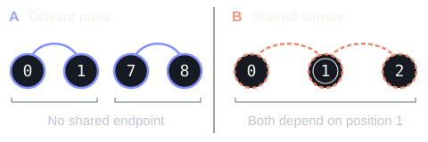

AArray A
Intact · 7 / 7 sensors
Selected pair count 2
Surviving pairs · distance 1
An interactive research note
Originality unresolved
Two seven-sensor arrays share every intact distance count. Remove sensors, and the hidden structure starts to matter.

Schematic, not to spatial scale · true position labels
02 / The instrument
Labels give true integer positions. Arcs join surviving witness pairs at your selected lag.
Small-screen schematic: sensors are arranged by index in two rows, not to spatial scale. Numbers are their true positions.
A connected pair contributes one count to the selected distance. A solid, B dashed; an inner ring marks a witness, a slash marks deletion. Select any sensor to delete or restore it.
Intact · 7 / 7 sensors
Selected pair count 2
Surviving pairs · distance 1
Intact · 7 / 7 sensors
Selected pair count 2
Surviving pairs · distance 1
The observation
Equal distance counts hide different shared dependencies.
03 / The shared measurement
Power is the squared magnitude of the array response. It sees the histogram, not which pairs share a sensor.
Intact power spectra
P(ω) = | Σ eiωx |² · fixed power scale 0–49
For the intact starting arrays: same histogram, unequal failure risk. In A, distance-one pairs are disjoint. In B, they share position 1. One deletion can erase both.
Complete distance histogram
Intact arrays · lags 1–12 · 21 pairs per array. Counts above, distance below.
A solidB dashedMatching counts at every lag
04 / The amplification
The mean randomly damaged power spectra still agree. The chance of losing a protected distance does not.
This explorer starts with intact arrays and is independent of the manual experiment above. Each sensor then fails independently with the same probability p. Failure means losing at least one distance in L = {1, 2, 3, 4, 5}.
A Absolute loss risk
B Absolute loss risk
B / A risk ratio
Times as likely to lose a protected lag
Both absolute risks fall as blocks are added. A growing ratio does not mean growing absolute danger. The protected set stays fixed at five distances.
Loss probability across 7 to 70 sensors
Logarithmic y-axis · shared A/B scale · probability, not percent
| Sensors | A loss risk | B loss risk | B / A |
|---|
Rounded display values above come from exact integer arithmetic, not simulation. Both risk fractions below share the same denominator. The ratio is numerator B / numerator A.
Homometry and sparse-array failure analysis are established. The originality of this explicit construction, sharp cut comparison and fixed-p amplification remains unresolved. A bounded literature search is not proof of novelty.
The model uses distinct, unit-weight integer sensors, fixed protected lags 1 through 5 and independent, identically distributed failures. It is not an optimized hardware design or a measurement of estimator accuracy. Full-aperture protection is not claimed. Equal mean spectra do not imply equal phase or equal damaged-spectrum distributions.
For a positive lag d, connect sensors separated by d. Every component is a path. Removing all edges requires a vertex cover: a path with ℓ vertices needs exactly ⌊ℓ/2⌋ deletions, attained by alternating vertices. Sum over paths, then minimize over protected lags.
A vertex hits at most two edges, while choosing one endpoint per edge always works. With m the smallest protected-lag multiplicity, each homometric array has ⌈m/2⌉ ≤ ρL ≤ m. Their destructive-cut ratio is therefore at most two. The separated motifs attain cuts 2q and q. This is a cut ratio, not a tolerance ratio.
Fix 0 < p < 1. One edge loses its witness with probability u = 2p − p². A three-vertex path loses both edges with probability v = p + p² − p³. Put a = u². In A every protected lag has absence probability at most a; in B lag 1 has absence probability v.
A lag disappears globally only when absent in all q independent blocks. A union bound gives RA ≤ 5aq, while RB ≥ vq. Hence RB / RA ≥ ⅕(v/a)q. Since v − a = p(1 − p)³ > 0, the bound grows exponentially. Both absolute risks tend to zero. No independence between different lag events is assumed.
The mean damaged power is (1 − p)² × intact power + p(1 − p) × sensor count, equal for both arrays. Exact loss probabilities instead enumerate all 128 base deletion states and combine their five-lag absence masks across blocks.
Exploration initiated and directed by Spooky (@5p00kyy), with an AI assistant running in OpenClaw. AI generated the construction, arguments, code, tests and exposition. Separate AI sessions independently challenged the mathematics and searched prior work. This is not human peer review or proof-assistant formalization. Originality remains unresolved.
Run npm test and npm run verify from the
project checkout. Finite checks test examples; the arguments
establish the infinite statements.
An educational, reproducible research project. Explore the public source on GitHub or report a correction. The file links above also open the sources bundled with this note.
Prior work / a starting point, not novelty clearance